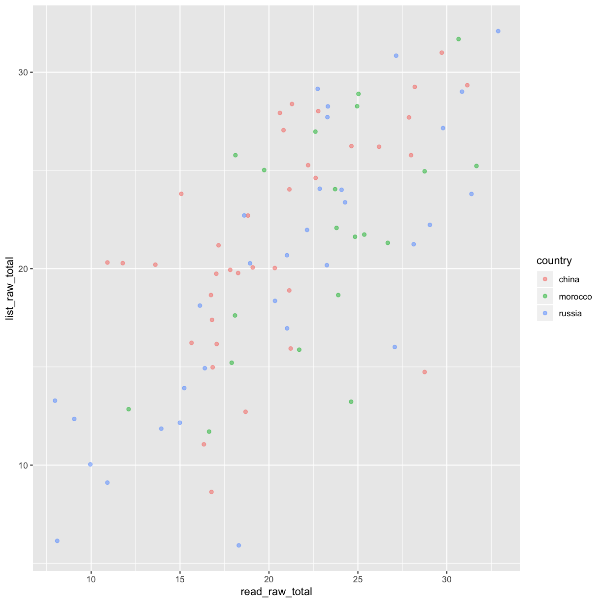
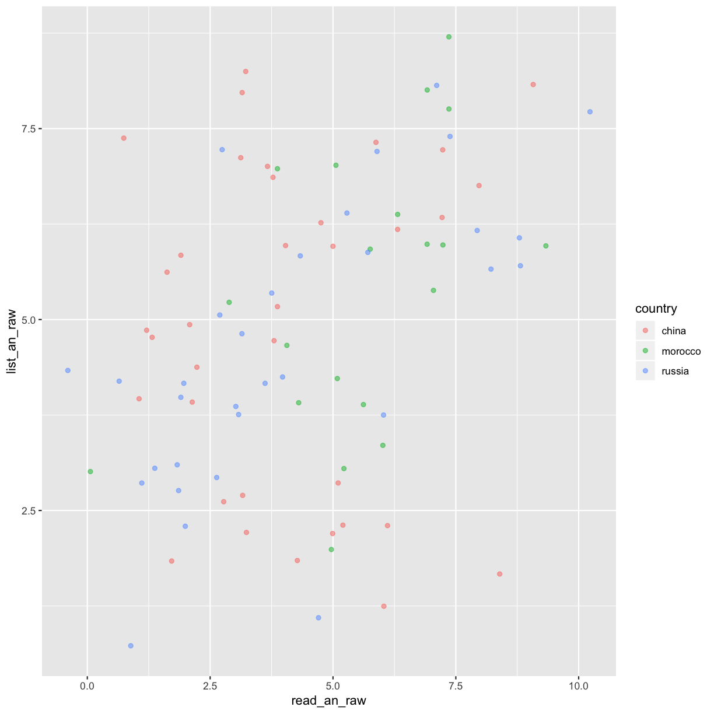
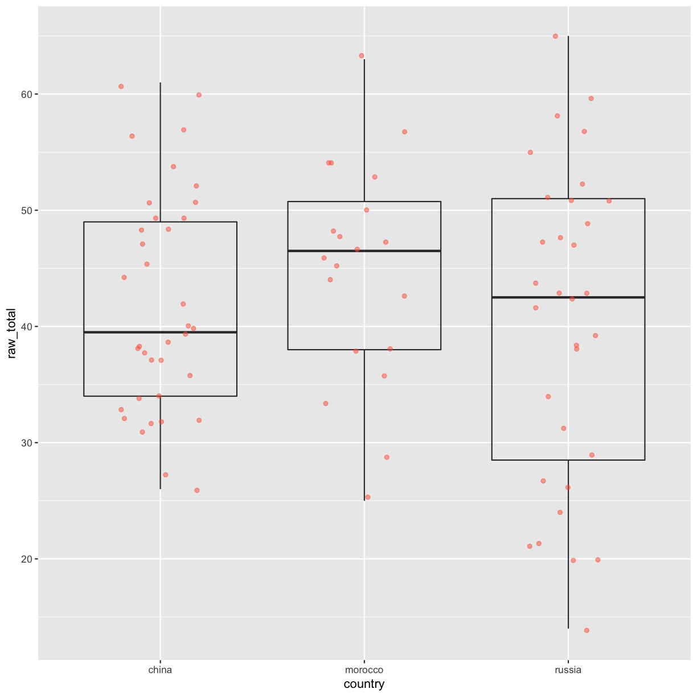
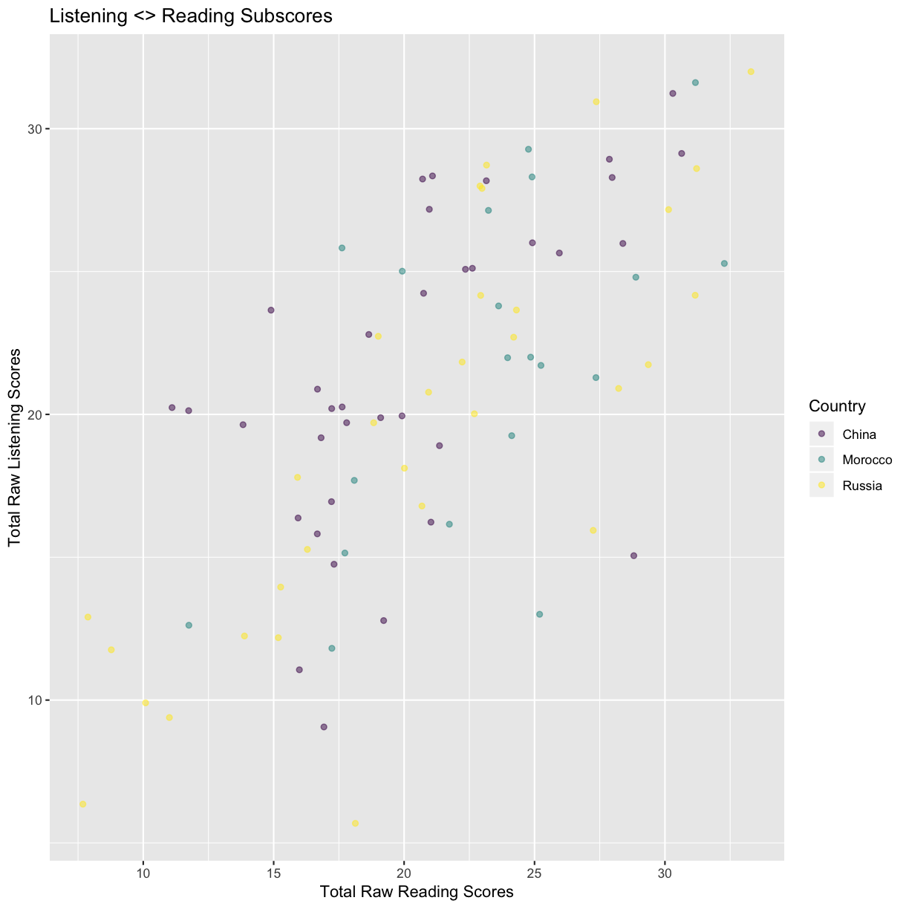

Part 1: Data visualisation with ggplot2
Overview
Teaching: 60 min
Exercises: 35 minQuestions
What are the components of a ggplot?
How do I create scatterplots, boxplots, and barplots?
How can I change the aesthetics (ex. colour, transparency) of my plot?
How can I create multiple plots at once?
Objectives
Produce scatter plots, boxplots, and time series plots using ggplot.
Set universal plot settings.
Describe what faceting is and apply faceting in ggplot.
Modify the aesthetics of an existing ggplot plot (including axis labels and color).
Build complex and customized plots from data in a data frame.
We start by loading the required package. ggplot2 is also included in the
tidyverse package.
library(tidyverse)
If not still in the workspace, load the data we saved in the previous lesson.
test_1_raw <- read_csv('data_output/test_1_raw_totals.csv') %>%
mutate(country = as.factor(country)) # changes the country variable to a factor
Parsed with column specification:
cols(
ID = col_double(),
country = col_character(),
raw_total = col_double(),
list_raw_total = col_double(),
list_an_raw = col_double(),
read_raw_total = col_double(),
read_an_raw = col_double()
)
# test_results_2 <- read_csv('data/placement_2.csv') %>%
# mutate(country = as.factor(country)) # changes the country variable to a factor
Plotting with ggplot2
ggplot2 is a plotting package that makes it simple to create complex plots
from data stored in a data frame. It provides a programmatic interface for
specifying what variables to plot, how they are displayed, and general visual
properties. Therefore, we only need minimal changes if the underlying data
change or if we decide to change from a bar plot to a scatterplot. This helps in
creating publication quality plots with minimal amounts of adjustments and
tweaking.
ggplot2 functions like data in the ‘long’ format, i.e., a column for every
dimension, and a row for every observation. Well-structured data will save you
lots of time when making figures with ggplot2
ggplot graphics are built step by step by adding new elements. Adding layers in this fashion allows for extensive flexibility and customization of plots.
To build a ggplot, we will use the following basic template that can be used for different types of plots:
ggplot(data = <DATA>, mapping = aes(<MAPPINGS>)) + <GEOM_FUNCTION>()
- use the
ggplot()function and bind the plot to a specific data frame using thedataargument
ggplot(data = test_1_raw)
- define a mapping (using the aesthetic (
aes) function), by selecting the variables to be plotted and specifying how to present them in the graph, e.g. as x/y positions or characteristics such as size, shape, color, etc.
ggplot(data = test_1_raw, aes(x = read_raw_total, y = list_raw_total))
-
add ‘geoms’ – graphical representations of the data in the plot (points, lines, bars).
ggplot2offers many different geoms; we will use some common ones today, including: geom_point()for scatter plots, dot plots, etc.geom_boxplot()for, well, boxplots!geom_line()for trend lines, time series, etc.
To add a geom to the plot use the + operator. Because we have two continuous variables,
let’s use geom_point() first:
ggplot(data = test_1_raw, aes(x = read_raw_total, y = list_raw_total)) +
geom_point()

The + in the ggplot2 package is particularly useful because it allows
you to modify existing ggplot objects. This means you can easily set up plot
templates and conveniently explore different types of plots, so the above plot
can also be generated with code like this:
# Assign plot to a variable
sub_skill_scatter <- ggplot(data = test_1_raw, aes(x = read_raw_total, y = list_raw_total))
# Draw the plot
sub_skill_scatter +
geom_point()
Notes
- Anything you put in the
ggplot()function can be seen by any geom layers that you add (i.e., these are universal plot settings). This includes the x- and y-axis mapping you set up inaes().- You can also specify mappings for a given geom independently of the mapping defined globally in the
ggplot()function.- The
+sign used to add new layers must be placed at the end of the line containing the previous layer. If, instead, the+sign is added at the beginning of the line containing the new layer,ggplot2will not add the new layer and will return an error message.
## This is the correct syntax for adding layers
sub_skill_scatter +
geom_point()
## This will not add the new layer and will return an error message
sub_skill_scatter
+ geom_point()
Building your plots iteratively
Building plots with ggplot2 is typically an iterative process. We start by
defining the dataset we’ll use, lay out the axes, and choose a geom:
ggplot(data = test_1_raw, aes(x = read_raw_total, y = list_raw_total)) +
geom_point()
Then, we start modifying this plot to extract more information from it. For
instance, we can add transparency (alpha) to avoid overplotting:
ggplot(data = test_1_raw, aes(x = read_raw_total, y = list_raw_total)) +
geom_point(alpha = 0.5)
That only helped a little bit with the overplotting problem. We can also
introduce a little bit of randomness into the position of our points
using the geom_jitter() function.
ggplot(data = test_1_raw, aes(x = read_raw_total, y = list_raw_total)) +
geom_jitter(alpha = 0.5)
We can also add colors for all the points:
ggplot(data = test_1_raw, aes(x = read_raw_total, y = list_raw_total)) +
geom_jitter(alpha = 0.5, color = "blue")
Or to color dots by country of origin in the plot differently, you could use a vector as an input to the argument color. Because we are now mapping features of the data to a color, instead of setting one color for all points, the color now needs to be set inside a call to the aes function. ggplot2 will provide a different color corresponding to different values in the vector. We set the value of alpha outside of the aes function call because we are using the same value for all points. Here is an example where we color by country:
ggplot(data = test_1_raw, aes(x = read_raw_total, y = list_raw_total)) +
geom_jitter(aes(color = country), alpha = 0.5)

There is a positive relationship between the raw scores on the reading and listening tests. There does not seem to be a difference in this relationship by country of origin.
Exercise
Use what you just learned to create a scatter plot of
read_an_rawbylist_an_rawwith thecountryshowing in different colors. Is this a good way to show this type of data?Solution
ggplot(data = test_1_raw, aes(x = read_an_raw, y = list_an_raw)) + geom_jitter(aes(color = country), alpha = 0.5)
Boxplot
We can use boxplots to visualize the distribution of total raw test scores across countries of origin:
ggplot(data = test_1_raw, aes(x = country, y = raw_total)) +
geom_boxplot()
By adding points to a boxplot, we can have a better idea of the number of measurements and of their distribution:
ggplot(data = test_1_raw, aes(x = country, y = raw_total)) +
geom_boxplot(alpha = 0) +
geom_jitter(alpha = 0.5, color = "tomato", width = .20)

Notice how the boxplot layer is behind the jitter layer? What do you need to change in the code to put the boxplot in front of the points such that it’s not hidden?
Exercise
Boxplots are useful summaries, but hide the shape of the distribution. For example, if the distribution is bimodal, we would not see it in a boxplot. An alternative to the boxplot is the violin plot, where the shape (of the density of points) is drawn.
- Replace the box plot with a violin plot; see
geom_violin().Solution
ggplot(data = test_1_raw, aes(x = country, y = raw_total)) + geom_violin(alpha = 0) + geom_jitter(alpha = 0.5, color = "tomato")

Barplots
Barplots are also useful for visualizing categorical data. By default,
geom_bar accepts a variable for x, and plots the number of instances each
value of x (in this case, wall type) appears in the dataset.
ggplot(data = test_1_raw, aes(x = country)) +
geom_bar()
Let’s say that, hypothetically, people who recieved a raw score of greater than a 50 are admitted into
the university, or some kind of program. We can include mutate, case_when, %>%, and ggplot to create a new
variable called admitted. Then we can plot it.
admit_bar <- test_1_raw %>%
mutate(admitted = case_when(raw_total > 50 ~ 'yes',
raw_total <= 50 ~ 'no')) %>%
ggplot(., aes(x = country, fill = admitted)) +
geom_bar(position = 'dodge') # places the bars next to each other
Exercise
Pretend that in order to be admitted, test takers need a reading subscore 25 or greater. Create a bar plot showing the counts of respondents from each country of origin who recieved a raw reading score greater or equal to than 25.
Solution
admit_bar_read <- test_1_raw %>% mutate(admitted_read = case_when(read_raw_total >= 25 ~ 'yes', read_raw_total < 25 ~ 'no')) %>% ggplot(., aes(x = country, fill = admitted_read)) + geom_bar(position = 'dodge') # places the bars next to each other
Adding Labels and Titles
By default, the axes labels on a plot are determined by the name of the variable
being plotted. However, ggplot2 offers lots of customization options,
like specifying the axes labels, and adding a title to the plot with
relatively few lines of code. We will add more informative x and y axis
labels to our plot of proportion of house type by village and also add
a title.
ggplot(data = test_1_raw, aes(x = read_raw_total, y = list_raw_total)) +
geom_jitter(aes(color = country), alpha = 0.5) +
xlab("Total Raw Reading Scores") +
ylab("Total Raw Listening Scores") +
ggtitle("Listening <> Reading Subscores") +
scale_color_viridis_d(labels = c('China', 'Morocco', 'Russia'), # add caps to key
name = 'Country') # add caps to legend title

Faceting
Rather than creating a single plot with side-by-side bars or points for each country of origin, we may want to create multiple plot, where each plot shows the data for a single country of origin. This would be especially useful if we had a large number of villages that we had sampled, as a large number of side-by-side bars will become more difficult to read.
ggplot2 has a special technique called faceting that allows the user to split one
plot into multiple plots based on a factor included in the dataset. We
will use it to split our scatterplot of of listening and reading scores
by country of origin so that each country of origin has it’s own panel in a multi-panel plot:
title_case <- as_labeller(c('china' = 'China',
'morocco' = 'Morocco',
'russia' = 'Russia'))
ggplot(data = test_1_raw, aes(x = read_raw_total, y = list_raw_total)) +
geom_jitter(alpha = 0.5) +
xlab("Total Raw Reading Scores") +
ylab("Total Raw Listening Scores") +
ggtitle("Listening <> Reading Subscores") +
facet_wrap(~ country, nrow = 1, labeller = title_case)
Click the “Zoom” button in your RStudio plots pane to view a larger version of this plot.
Usually plots with white background look more readable when printed. We can set
the background to white using the function theme_bw(). Additionally, you can remove
the grid:
title_case <- as_labeller(c('china' = 'China',
'morocco' = 'Morocco',
'russia' = 'Russia'))
ggplot(data = test_1_raw, aes(x = read_raw_total, y = list_raw_total)) +
geom_jitter(alpha = 0.5) +
xlab("Total Raw Reading Scores") +
ylab("Total Raw Listening Scores") +
ggtitle("Listening <> Reading Subscores") +
facet_wrap(~ country, nrow = 1, labeller = title_case) +
theme_bw(base_size = 18) + # increase base font size to 18
theme(panel.grid = element_blank())
What if we wanted to see histograms of the total scores on the test by country of origin:
total_score_hist <- test_1_raw %>%
ggplot(., aes(x = raw_total)) +
geom_histogram() +
facet_wrap(~ country, labeller = title_case) +
ylab('Counts') +
xlab('Total Raw Test Score') +
xlim(0, 70) + # set the limits of the x-axis at 0 and 70 (min and max possible)
ggtitle('Total Raw Test Score Distribution by Country')
ggplot2 themes
In addition to theme_bw(), which changes the plot background to white,
ggplot2 comes with several other themes which can be useful to quickly
change the look of your visualization. The complete list of themes is available
at http://docs.ggplot2.org/current/ggtheme.html. theme_minimal() and
theme_light() are popular, and theme_void() can be useful as a starting
point to create a new hand-crafted theme.
The
ggthemes
package provides a wide variety of options (including an Excel 2003 theme). The
ggplot2 extensions website provides a list
of packages that extend the capabilities of ggplot2, including additional
themes.
Exercise
Experiment with at least two different themes. Build the previous plot using each of those themes. Which do you like best?
Customization
Take a look at the ggplot2 cheat
sheet,
and think of ways you could improve the plot.
Exercise
With all of this information in hand, please take another five minutes to either improve one of the plots generated in this exercise or create a beautiful graph of your own. Use the RStudio
ggplot2cheat sheet for inspiration. Here are some ideas:
- See if you can make the bars white with black outline.
- Try using a different color palette (see http://www.cookbook-r.com/Graphs/Colors_(ggplot2)/).
After creating your plot, you can save it to a file in your favorite format. The Export tab in the Plot pane in RStudio will save your plots at low resolution, which will not be accepted by many journals and will not scale well for posters.
Instead, use the ggsave() function, which allows you easily change the dimension and resolution of your plot by adjusting the appropriate arguments (width, height and dpi).
Make sure you have the fig_output/ folder in your working directory.
ggsave("fig_output/name_of_file.png", total_score_hist, width = 6, height = 4, units = 'in')
Note: The parameters width and height also determine the font size in the saved plot.
Key Points
ggplot2is a flexible and useful tool for creating plots in R.The data set and coordinate system can be defined using the
ggplotfunction.Additional layers, including geoms, are added using the
+operator.Boxplots are useful for visualizing the distribution of a continuous variable.
Barplot are useful for visualizing categorical data.
Faceting allows you to generate multiple plots based on a categorical variable.